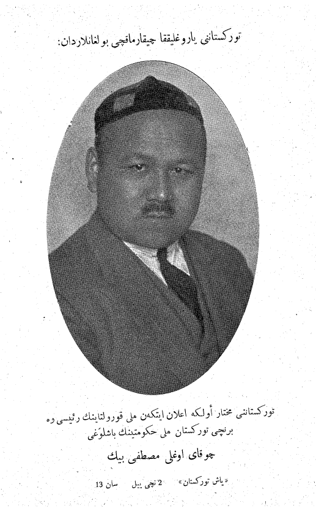

Mustafo Choʻqay va Turkiston siyosiy muhojirligi (1917–1941)
Turkiston (Qoʻqon) Muxtoriyati rahbari Mustafo Choʻqayning (1890–1941) hayoti va siyosiy muhojirlik tarixi: 1917-yil noyabrda eʼlon qilingan muxtoriyat, uning 1918-yil fevralda bostirilishi, Choʻqayning Boku–Tbilisi–Istanbul–Parij yoʻli bilan Fransiyaga koʻchishi, Berlinda 1929–1939-yillarda chiqqan “Yosh Turkiston” jurnali (117 son), Ikkinchi jahon urushidagi mavqei va 1941-yildagi vafoti. Prometey harakati va boshqa Turkistonlik muhojirlar. Faqat tasdiqlangan faktlar; bahsli tafsilotlar alohida qayd etilgan.

Mustafo Choʻqay (Mustafa Shokay; 1890-yil 25-dekabr — 1941-yil 27-dekabr) — Turkiston (Qoʻqon) Muxtoriyati rahbarlaridan biri, yurist va publitsist, XX asrning eng koʻzga koʻringan Turkistonlik siyosiy muhojiri. Quyida uning hayoti va muhojirligi tarixi faqat tasdiqlangan faktlar bilan, muxtoriyat.uz, shokay.kz, e-history.kz va akademik tadqiqotlar (jumladan “Yosh Turkiston” jurnali boʻyicha ishlar) asosida bayon etiladi. Bahsli yoki turli manbalarda har xil keltirilgan tafsilotlar matnda alohida qayd etilgan.
Kim edi Mustafo Choʻqay
U 1890-yil 25-dekabrda Rossiya Turkistonining Sirdaryo viloyatida (hozirgi Qozogʻistonning Qizilorda atrofida) nufuzli oilada tugʻilgan; millati boʻyicha qozoq edi. Toshkent gimnaziyasini (taxminan 1910-yil, oltin medal bilan) va Sankt-Peterburg imperator universiteti huquq fakultetini tamomlagan. Kasbi — huquqshunos va jurnalist-siyosatchi.
Turkiston (Qoʻqon) Muxtoriyati
1917-yil 27-noyabrda Qoʻqonda boʻlib oʻtgan Butunturkiston musulmonlarining favqulodda qurultoyida Turkiston Rossiya federatsiyasi tarkibidagi avtonom hudud deb eʼlon qilindi. Choʻqay avval tashqi ishlar noziri, soʻng hukumat boshligʻi (bosh vazir) etib saylandi — dastlabki bosh vazir Muhammadjon Tinishpayev boʻlgan. Toshkent Sovetining Qizil Armiya kuchlari (Fyodor Kolesov qoʻmondonligida) 1918-yil fevralda Qoʻqonga hujum qilib, shaharni oʻqqa tutdi va muxtoriyat tugatildi (rasman 22-fevral atrofida). Qurbonlar soni manbalarda turlicha (oʻn mingdan yuqori deb) keltiriladi — aniq raqam ishonchli oʻrnatilmagan.
Muhojirlik yoʻli
Muxtoriyat bostirilgach, Choʻqay janubga — Boku, soʻng Tbilisiga (Gruziya, 1919–1921) oʻtdi. Gruziya sovetlashtirilgach, Istanbul orqali 1921-yil yozida Parijga bordi. Taxminan 1923-yildan Parij chekkasidagi Nogent-sur-Marn shaharchasida yashadi va bu yer 1941-yilgacha uning asosiy makoni boʻlib qoldi. Shu tariqa u interbellum (ikki jahon urushi orasidagi) davrning yetakchi Turkistonlik siyosiy muhojiriga aylandi.
“Yosh Turkiston” jurnali
Choʻqay muhojirlikda ilgari “Yangi Turkiston” (Yeni Türkistan) nomli jurnalni, keyin esa eng mashhur nashri — “Yosh Turkiston” (Yaş Türkistan) jurnalini chiqardi. “Yosh Turkiston” 1929–1939-yillarda Berlinda bosilgan va jami 117 son (ayrimlari qoʻshma) chiqqan; ayrim manbalarga koʻra materiallar Parijda tayyorlanib, Berlinda chop etilgan. Jurnal chigʻatoy-turkiy tilida, arab yozuvida boʻlib, Turkiston xalqlarining milliy mustaqilligi va madaniy birligi gʻoyasini ilgari surdi hamda sovet tuzumini tanqid qildi.
Ikkinchi jahon urushi va vafoti
1941-yilda Germaniya SSSRga hujum qilgach, Choʻqay nemislar tomonidan asirga tushgan Markaziy osiyolik qizilarmiyachilar lagerlarini koʻrishga olib borildi va undan bu asirlardan “Turkiston legioni” tuzishda qatnashish soʻralди. Ishonchli manbalar uning asirlar bilan muomaladan norozi boʻlib, legionni boshqarish yoki unda hamkorlik qilishdan bosh tortganini yozadi. U 1941-yil 27-dekabrda Berlinda vafot etdi; rasmiy sabab — lagerlarda yuqqan tif epidemiyasi fonidagi qon zaharlanishi. Zaharlab oʻldirilgani haqidagi taxmin tarqalgan boʻlsa-da, u hech bir ishonchli manbada isbotlanmagan; Turkiston legioni aslida keyinroq (1941–42-yillarda) usiz tuzilgan.
Prometey harakati va boshqa muhojirlar
Choʻqay ikki urush orasidagi sovetga qarshi muhojir milliy harakatlar koalitsiyasi — Prometey harakati bilan bogʻliq edi. “Prometey” tashkiloti 1926-yilda Parijda tuzilib, keyinroq Varshavada markazlashgan va ukrain, gruzin, ozarbayjon, shimoliy kavkaz hamda Turkiston muhojirlarini birlashtirgan. Choʻqay Kavkaz muhojirlaridan Mahammad Amin Rasulzoda kabi arboblar bilan yonma-yon ishlagan; boshqa Turkistonlik muhojirlar orasida Zaki Validiy Toʻgʻon va Usmonxoʻja bor edi, urushdan keyin esa Boymirza Hayit Turkiston tarixining muhojirlikdagi yetakchi tadqiqotchisiga aylandi.
Konteksti va merosi
Choʻqay muhojirligi kengroq manzaraning bir qismi edi: bosmachilik qarshiligi 1920–1930-yillar boshida bostirilib, omon qolganlar Afgʻoniston va Turkiyaga chiqib ketdi; SSSR ichidagi jadid ziyolilari esa 1930-yillar oxiridagi qatagʻonlarda asosan yoʻq qilindi. Choʻqay va Toʻgʻon kabi muhojirlar bu gʻoyani Turkiya va Gʻarbiy Yevropada davom ettirdi. Bugun uning merosi Qozogʻistonda keng eʼzozlanadi — Qizilorda va Olmotida (2006-yil) koʻchalar, muzey eksponatlari, koʻp jildli asarlar bilan; Fransiyada Nogent-sur-Marnda haykal (2001) va xotira lavhasi (2008) oʻrnatilgan.